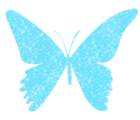

Kâveh

Âge : 21 ans
Yeux : Bleu foncé
Cheveux : Bruns, mi-longs
T'anamgzavri : Papillon bleu
Don : Prédiction
Kâveh est un garçon rêveur, qui a tendance à se perdre dans les histoires qu'il lit et ne revient à la réalité que lorsque celle-ci l'y oblige. Souvent dans sa tête, il ne réagira pas forcément tout de suite à ce qui l'entoure, et aura tendance à tester ses idées sans en parler aux autres auparavant. C'est tout naturellement qu'il s'est dirigé vers des études de littérature, à l'université.

Kunal
Âge : 22 ans
Yeux : Vert
Cheveux : Roux, longs
T'anamgzavri : Singe
Don : Apaisement
Kunal est un jeune homme énergique, toujours prêt à réagir à ce qui l'entoure. D'humeur généralement joyeuse, il fera tout ce qui est en son pouvoir pour remonter le moral de son entourage. Passionné de science-fiction et d'une série de film en particulier, il est entré à l'université afin de se spécialiser dans l'analyse de ce domaine, et qui sait, peut-être un jour créer son propre univers. Kunal possède un jeune berger allemand nommé Storm.

Bayl
Âge : 21 ans
Yeux : Vairons
Cheveux : Blonds, courts
T'anamgzavri : Chat
Don : Protection
Dépassant tout le monde d'au moins une tête, Bayl est le membre le plus protecteur du groupe. Tout comme Kâveh, il tend à se perdre dans ses livres, quoique moins souvent, et souvent pour moins longtemps, également. S'il n'a pas toujours les pieds sur terre, il saura réagir à temps pour protéger le reste de la bande.
Bayl possède un chat du nom de Wizard.

Iah
Âge : 23 ans
Yeux : Marron
Cheveux : Châtain clair, mi-longs
T'anamgzavri : Cheval
Don : Empathie
Iah est le meilleur ami et colocataire de Kunal, et quoiqu'un peu dépassé, parfois, par les facéties de celui-ci, il n'est pas le dernier pour s'amuser. Parfois un peu dans la lune, il est cependant celui qui s'inquiète le plus pour le reste du groupe. Tout comme Kunal, il est passioné de science-fiction, et leur amour commun pour une certaine série de film leur vaut parfois des taquineries de la part de leurs amis. Il possède un labrador chocolat, du nom de Trooper.

Frej
Âge : 24 ans
Yeux : Bleu pâle
Cheveux : Blancs, courts
T'anamgzavri : Tigre
Don : Autorité
Frej est le membre le plus posé de tout le lot, qui saura ramener les autres à la raison. De nature calme, il écoutera tout le monde avant de se jeter dans la gueule du loup ; cependant, il lui arrive parfois de penser si vite qu'il est difficile de comprendre où il veut en venir. Les autres le voient parfois comme un vieux sage, mais qui délirerait un peu à force de solitude - cependant, tous lui font une confiance aveugle, et savent se reposer sur lui lorsque c'est nécessaire.